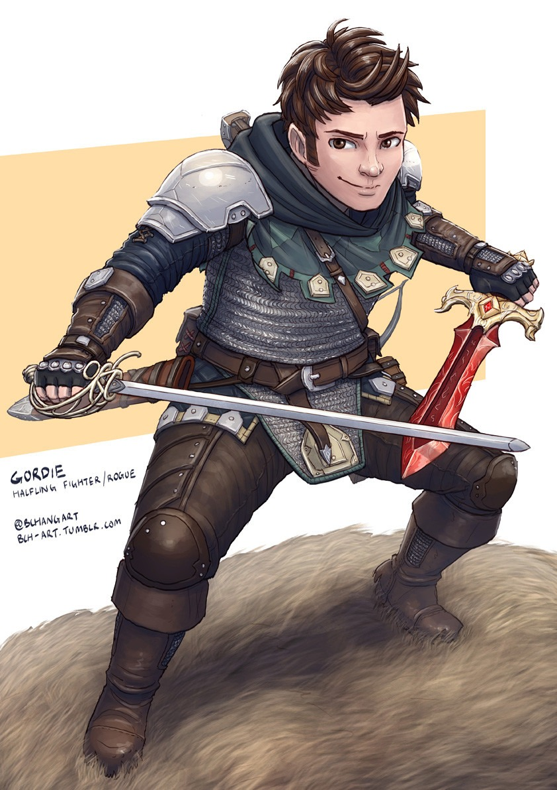

 Wilford is a humble son of a long dynasty of Redhides, leatherworkers from the Green Hill community. However one fateful day has changed everything, thrusting the young halfling upon a road of rebellion. Wilford, heavily inspired by his uncle Corwyn, became an enthusiastic and hyperachieving fighter for the revolution. One of his first missions led him into joining a ragtag group of people, with whom he shared his vision of a free people.
Powers
1) Manifesto of Subterfuge
An encoded journal left behind by Corwyn Redhide, Wilfords uncle.
It details his tactics and oppinions pertaining to the revolutionary movement.
Within lies the wisdom of perhaps the most notorious halfling in modern history, an almost sacred text to the revolutionaries.
Observations within are invaluable to those who have the wit and the persevearance to use them in reality.
The encryptions within are written in myriad of lost and current languages as well as a nigh infinity of cyphers that seem to
change on a whim. There is an impossible logic behind it, although it has a pattern on an almost intuitive level. Perhaps the mysteries
within will unlock not only a path to freedom, but a deeper truth about the world, hidden from everyone but the maker of this journal.
Age: 29; Height: 0.93 m ; Weight 18 kg. Str: 7 Dex: 20 Con: 15 Int: 10 Wis: 12 Cha: 18